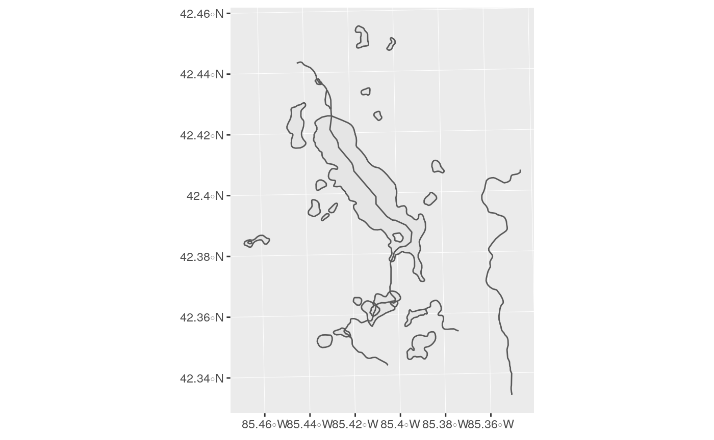
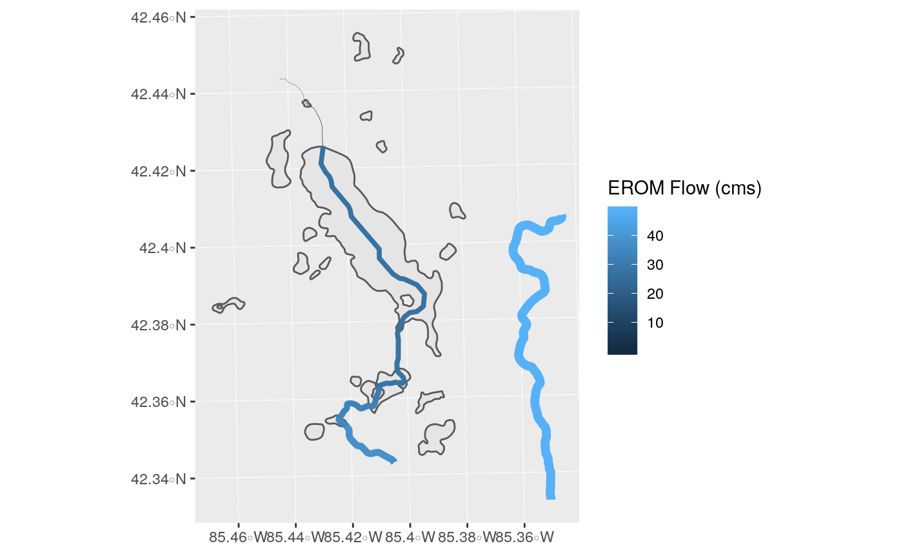
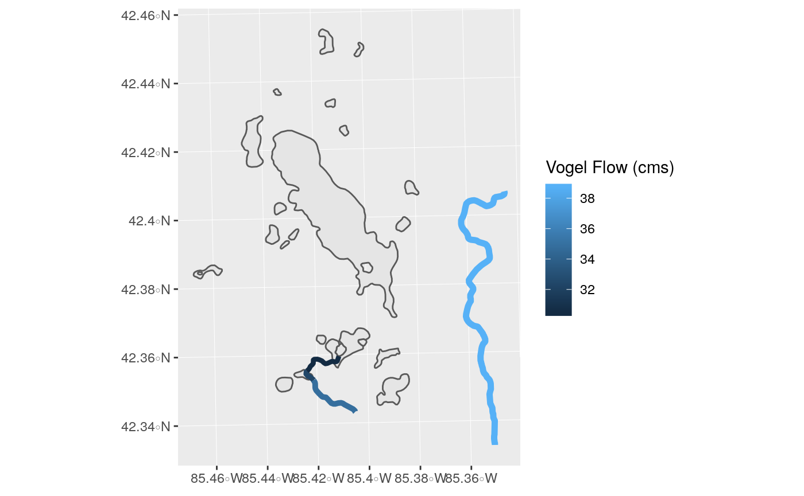

Let’s get some flow data for the NHDPlus subset included with nhdR package. Our goal is to adjust the color and size of each reach by their average flow.
library(nhdR)
library(dplyr)
library(ggplot2)
library(sf)
gull_sf <- gull$sp$NHDFlowLineNHDPlus includes two estimates of flow:
eromflow <- nhd_plus_load(4, "EROMExtension", "EROM_MA0001") %>%
filter(ComID %in% gull$sp$NHDFlowLine$COMID) %>%
select(ComID, Q0001F)
gull_sf <- left_join(gull_sf, eromflow, by = c("COMID" = "ComID"))vogelflow <- nhd_plus_load(4, "VogelExtension", "vogelflow") %>%
filter(COMID %in% gull$sp$NHDFlowLine$COMID,
MAFLOWV != -9999.00000)
gull_sf <- left_join(gull_sf, vogelflow, by = "COMID")gull_sf <- dplyr::filter(gull_sf, !is.na(Q0001F))
gull_sf %>%
ggplot() +
geom_sf(data = gull$sp$NHDWaterbody) +
geom_sf(aes(color = gull_sf$Q0001F), size = gull_sf$Q0001F / 20) +
labs(color = "EROM Flow (cms)")
gull_sf <- filter(gull_sf, !is.na(MAFLOWV))
gull_sf %>%
ggplot() +
geom_sf(data = gull$sp$NHDWaterbody) +
geom_sf(aes(color = gull_sf$MAFLOWV), size = gull_sf$MAFLOWV / 20) +
labs(color = "Vogel Flow (cms)")